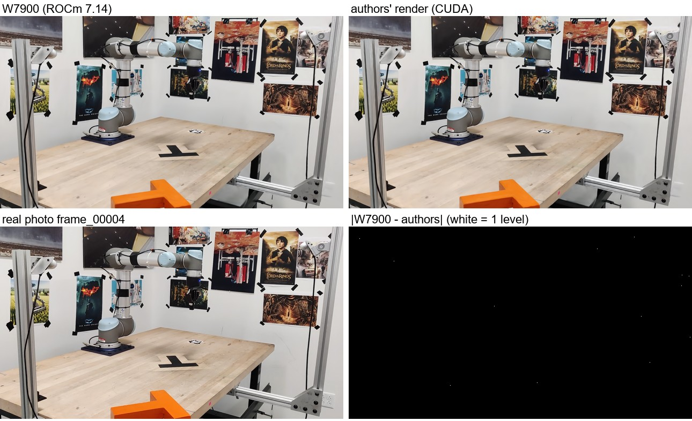
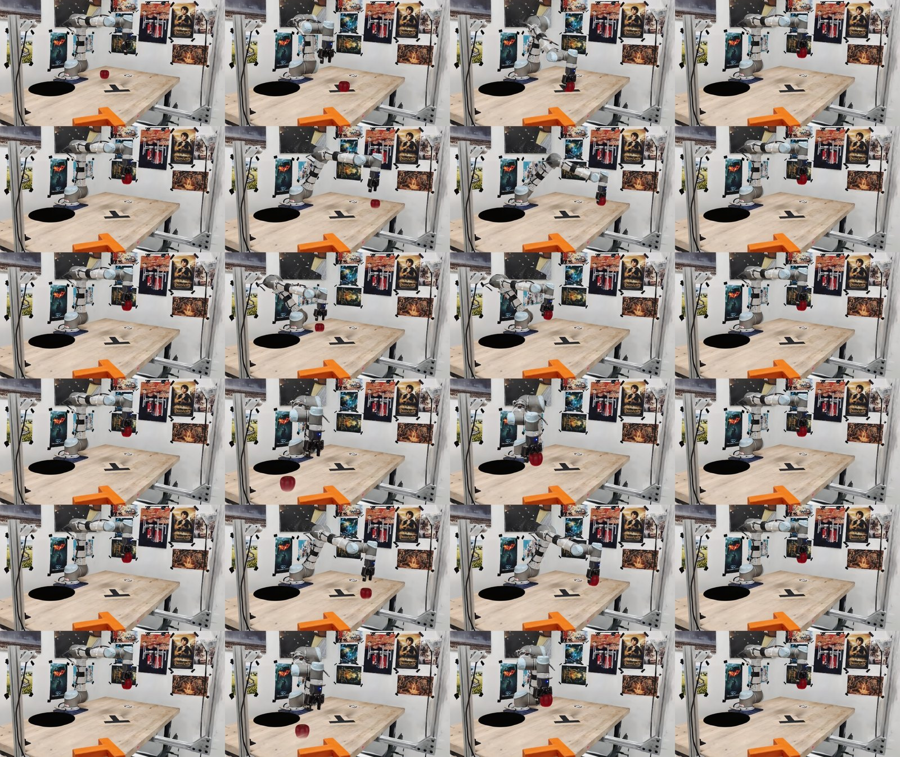
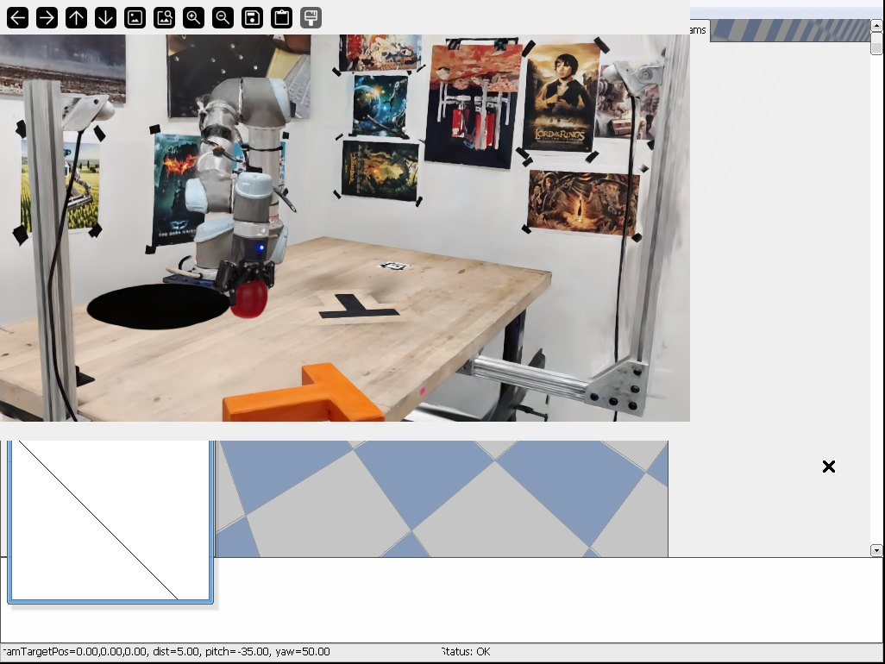

SplatSim · 2026.11.05
A Real Robot Arm Shot as Two Million Gaussians, Then Moved by Joint Angle: SplatSim on a W7900



A simulator has never been short of physics. PyBullet knows how heavy the apple is, how many steps the gripper takes to close, whether the rim of the plate will bounce the apple off. What it lacks is a face that has seen the real world: the weave of the tablecloth, the ring of light-blue caps on the UR5's joints, the light leaking in from the window. If a policy works only from joint angles and object poses, the face does not matter; once it has to pick out "which one is the apple" from an RGB image, the plastic face the simulator draws becomes the biggest hole.
SplatSim's fix is direct: physics stays with PyBullet, and rendering switches to Gaussian Splatting of the real scene. First shoot a minute or two of phone video around the robot arm and reconstruct a photorealistic scene; then, every time a joint turns or the apple moves a centimeter in simulation, move the corresponding cluster of Gaussians in the reconstruction by the same rigid transform and draw it. The rendered images are paired with the simulated trajectories to train a Diffusion Policy, which then goes straight onto the real robot.
The work comes from the Robotics Institute at Carnegie Mellon University, by M. Nomaan Qureshi, Sparsh Garg, Francisco Yandun, David Held, George Kantor and Abhisesh Silwal, published at ICRA 2025. The paper is arXiv:2409.10161 and the project page is splatsim.github.io. On the real robot the numbers are these: four tasks, 40 trials each, an RGB policy trained only on simulated data reaches an average zero-shot success rate of 86.25%, against 97.5% for a control trained on real data. The human effort for collecting data is 3 hours against 20.5.
Depth transfers; RGB does not
The beautiful sim-to-real results of the past few years, quadrupeds walking over rubble, dexterous hands turning objects in the palm, grasping objects never seen before, mostly rely on depth, point clouds, touch or proprioception. The paper puts it bluntly: the modalities a simulator can simulate well are the ones that transfer well. A depth map looks much the same in simulation as on a RealSense; RGB does not. RGB carries color, texture, reflections and shadows, all the things simulators are worst at. The paper quotes the line that visual sim-to-real is at heart an out-of-distribution generalization problem, which machine learning still has no general solution for.
And yet RGB is hard to give up. Judging whether a fruit is ripe at harvest depends on color; depth and touch do not help. Cameras are cheap and everywhere, and people see the world through this signal too. The old approaches come in roughly two kinds. Domain randomization randomizes textures, lighting and cameras so the policy has seen a lot, at the cost of tuning the randomization ranges for every task, and even well tuned, all it has done is "seen many fake worlds." The other is Real2Sim2Real, such as RialTo, which brings the real scene into simulation, but the policy eats point clouds and needs depth at deployment. Maniwhere does large-scale reinforcement learning and also needs depth at test time.
SplatSim's bet: do not randomize a fake world; scan the deployment site once and let the simulator "see" through that scan. At deployment, the policy eats only RGB. The cost is that every new scene has to be shot and aligned again.
A colored, oriented fog that comes apart naturally
3D Gaussian Splatting represents a scene with millions of 3D Gaussians. Each Gaussian has a center, scales along three axes, a rotation quaternion and an opacity, with color encoded by third-order spherical harmonics, 16 coefficients per color channel, so color changes with the viewing direction and metal gets highlights. Stored in a .ply, one Gaussian is 62 floats. The robot-arm scene used here has 2,192,636 Gaussians, the apple 2,734 and the plate 11,398.
Its biggest difference from NeRF is that it is explicit. NeRF compresses a scene into an MLP; if you want one section of the arm to turn 30 degrees, there is no clean place to put your hands. Gaussians are individual points: pick out the batch belonging to a link and apply a rigid transform. The center becomes μ' = Rμ + t and the covariance becomes Σ' = RΣRᵀ. The shape stays the same, the orientation turns with it, and the rendering pipeline does not change a word.
So SplatSim's core premise fits in one sentence: if you can separate the batch of Gaussians belonging to each rigid body in the scene and know its pose relative to the simulator, you can draw it in any new pose. The arm's links, the gripper's fingers, the apple and the plate on the table are all such rigid bodies. This is in fact how a traditional simulator renders, with triangle meshes swapped for Gaussians.
Taking a UR5 apart into 19 pieces
The robot part takes three steps.
The first step aligns the coordinate frames. During the scan, the arm sits in an easy-to-describe pose with joint angles at whole multiples of 90 degrees, recorded in the config. COLMAP recovers the camera poses, and 3DGS trains for 30,000 steps. The reconstructed frame differs from the simulator's, and so does the scale: the reconstruction's units are whatever COLMAP happened to pick. The authors sample the URDF into a point cloud and run ICP against the Gaussian centers in CloudCompare: a coarse alignment without scale first, a manual fix, then a fine alignment with scale, giving a similarity transform. The robot_iphone matrix in the repository has a scale of about 0.226, meaning 1 meter in simulation is about 4.4 units in the reconstruction.
The second step assigns each Gaussian to a link. The paper says links are cut with CAD bounding boxes, and since small slanted parts like the gripper do not cut cleanly with boxes, a KNN classifier is trained using points sampled from each URDF link as labels. The repository has since unified the pipeline on KNN: articulated_robot_pipeline.py first uses the arm's bounding box in the simulation frame to circle 262,446 Gaussians, then a k=10 nearest-neighbor classifier sorts them into 19 labels. The remaining 1.9 million or so Gaussians are the table, walls and floor, and never move.
The third step is forward kinematics. Every frame, PyBullet gives each link's current pose; comparing it with the pose at scan time gives the link's relative transform. The paper writes it as T = (T_splat)⁻¹ · T_fk · T_splat: go from the reconstruction frame into the simulation frame, turn in simulation, then go back. The code does one more thing the paper does not mention. A Gaussian's color is spherical-harmonic coefficients, which are directional. When a link turns, its highlights should turn with it, or it looks like the glint on your glasses staying pinned in midair when you turn your head. transform_shs uses e3nn's Wigner-D matrices to rotate the 15 coefficients of orders one to three together, with 3×3, 5×5 and 7×7 blocks assembled into one block-diagonal matrix. This step is easy to skip, and the picture still passes if you skip it; the metal joints just look a bit fake when they turn.
The apple and the plate are two more scans
Objects are scanned and trained separately, and 7,000 iterations are enough. The alignment is the same: ICP between points sampled from the object mesh and the object's Gaussians gives the transform from the reconstruction frame to the simulator's object frame. Every frame, PyBullet gives the apple's position and quaternion; the code first places the apple's Gaussians at the canonical pose in simulation, then moves them to the current pose, and finally transforms them back into the robot scene's reconstruction frame, drawing them together with the arm's Gaussians as one GaussianModel. An object scan inevitably carries a bit of tabletop and floating noise, so the code trims it once more with a bounding box in the object's own frame.
Replay has one more small trick: object poses are written straight back from the recorded trajectory, and before writing, the object's mass is set to 0 to switch off gravity. Otherwise PyBullet would let the apple drop a little between two writes, and the apple in the picture would jitter.
Write the script first, then cast the actors
Demonstrations are mass-produced in simulation. For the apple-on-plate task, every demonstration comes about like this: place the apple and the plate at random, at least 20 cm apart; pick a random starting end-effector pose, eighty percent of the time anywhere in the workspace and twenty percent above the apple; compute the pre-grasp point from a precalibrated grasp pose, 10 cm behind it, solving inverse kinematics every 1 cm along the approach direction; plan a collision-free joint path with pybullet_planning, close the gripper, lift to 40 cm, move above the plate, release, and return to the initial pose. Finally check whether the apple landed within about 17 cm of the plate, and delete the whole demonstration if not. T-Push is pushing, and the authors did not use a planner; they teleoperated 160 demonstrations in simulation with GELLO and let the simulator handle the resets.
The key is that what gets recorded is state, not pixels. Every 50 simulation steps, the joint angles, end-effector pose, and each object's position and orientation in PyBullet are saved as a pickle; while the gripper opens or closes, every 20 steps. The images are drawn only in a separate replay. The apple data upstream released has 420 trajectories and 37,241 time steps, 49 to 172 steps each, and the whole archive is only 76 MB. With script and actors kept apart, change the robot arm or the room, scan once more, and the same batch of scripts can be reshot untouched. This validation ran exactly that "reshoot."
From 21% to 86%: the gap is mostly light
The policy is a Diffusion Policy whose input is the rendered RGB plus the end-effector position and orientation, with the end-effector state also perturbed. The real robot is a UR5 with a Robotiq 2F-85, two RealSense D455s, and the policy runs on one RTX 3080 Ti.
| Task | Sim2Sim | Real2Real | Sim2Real (SplatSim) | Effort (sim / real, hours) |
|---|---|---|---|---|
| T-Push | 100% | 100% | 90% | 3.0 / 3.5 |
| Pick-Up-Apple | 100% | 100% | 95% | 0 / 3.5 |
| Orange-On-Plate | 97.5% | 95% | 90% | 0 / 6.0 |
| Assembly | 85% | 90% | 70% | 0 / 7.5 |
| Average | 95.62% | 97.5% | 86.25% | 3.0 / 20.5 |
Rendering quality has its own numbers: over 300 joint configurations, renders compared with real photos reach a PSNR of 22.62 and an SSIM of 0.7845. Not high, and the reason is clear. The color in a Gaussian is the color at the moment of capture; the lighting is baked into every Gaussian. When the arm lifts, its shadow on the table does not follow, and the lifted arm still carries the light and shade of where it used to be. The cables are soft, and moving them around as rigid bodies is not right either.
So the loudest number in the ablation is not rendering but augmentation: adding Gaussian noise, color jitter and random erasing during training lifts the average success rate over the four tasks from 21% to 86.25%. Gaussian splatting shrinks the distance between simulation and reality to "the same room, the same table," and the remaining shadows and reflections are left to augmentation to grind down. That also marks its boundary: it handles rigid bodies only; cloth, liquids and plants are still out of reach. The next step the authors name in their conclusion is exactly agricultural tasks like pruning and harvesting.
One W7900: a 52-line patch and a display that does not exist
The only parts of SplatSim that really touch the GPU are two CUDA extensions: the 3DGS rasterizer diff-gaussian-rasterization (the dr_aa branch), and simple-knn, which is imported as soon as a Gaussian model loads. Everything else is Python: PyBullet computes physics on the CPU, e3nn computes Wigner-D, and PyTorch's "cuda" device already points to HIP on ROCm. When PyTorch builds an extension it first hipifies the .cu files automatically, and what is left is the few places hipify does not handle. CUB becomes hipCUB, with one line namespace cub = hipcub and not a word changed at the call sites. Launch syntax with a space in the middle like << < is fine with nvcc and rejected by clang. __trap() becomes __builtin_trap(). cooperative_groups/reduce.h and device_launch_parameters.h do not need to be included under HIP. simple-knn also writes its own #define __CUDACC__ before including cooperative groups, a harmless courtesy to nvcc; the patch lets it say that only under nvcc, since there is no need to impersonate the CUDA compiler under hipcc. Fifty-two lines in all, every one guarded by __HIP_PLATFORM_AMD__, so the code still builds with nvcc as is. GLM did not change a line; the pinned 0.9.9.9 has long known HIP.
The build has two small things. The pip-installed ROCm in the image does not carry the three header-only libraries hipCUB, rocPRIM and rocThrust; unpacking the -dev packages from repo.radeon.com and handing them to CPATH is enough. Both extensions need --no-build-isolation, or pip will helpfully install a CUDA build of torch in an isolated environment, and what comes out will not match the ROCm in the image.
The display was a separate matter. Of upstream's two entry points, one opens a PyBullet GUI window and the other shows every frame live with cv2.imshow, and the server has no display. Without changing the code, the container gets an Xvfb. So this machine runs two renderers at once: the PyBullet window for humans is drawn on the CPU by Mesa's llvmpipe, and the two million Gaussians for the policy are drawn on the W7900.
The remaining trouble was not on the GPU at all. The pybullet-URDF-models submodule points to a repository that is now a 404, and a copy in GPT-RL happens to have that commit. The upstream repository has a folder called to_delete/, 780 MB, and the project's own GPL-2.0 license was swept into it too; this port brought it back to the root. The data is three Google Drive archives totaling 60 GB, of which this path uses only about 1.5 GB; the script reads the central directory at the end of each archive and fetches just the members it needs with range requests. Single-GPU was the one thing that needed no trade-off: the server and the replay client work in turn, the whole replay takes 4.4 GiB of GPU memory, and a 48 GB card has plenty to spare.
What the validation shows
The first check is the cleanest. The authors released, with the data, every training view they rendered with the CUDA build of 3DGS. Redraw six of those views from the same 2,192,636-Gaussian splat on the W7900 at the full resolution of 1907×1071 and compare with the authors' images: PSNR of 96 to 97 dB, with a maximum difference of one gray level. For the camera used in replay, only 82 of its 2.04 million pixels differ by 1, and the rest are bit-identical; the PSNR against the real photo is exactly the same on both sides. Forward rasterization has no atomic adds and its sorting is deterministic, so the two vendors' cards compute almost the same image, and that one gray level is most likely floating-point functions like exp disagreeing in the last few bits.
The second check is the main path in upstream's README itself. Both commands ran as is, all 420 trajectories replayed, and 37,241 time steps produced 37,241 images of 800×449, with no trajectory missing a frame. One card, 95 minutes, 6.5 frames per second on average. Median GPU utilization was only 53%, and py-spy showed why: of the server's 0.15 seconds per frame, most went to building Wigner-D matrices on the CPU for 20 joints one by one and rotating the spherical-harmonic coefficients of each segment's Gaussians, while the render call itself accounted for 3.6% of the samples. The step the paper does not mention is precisely the most expensive one on this path. To make it faster, move that step onto the GPU first, rather than buy a faster card.
The plate in the pictures is a black disc. In the released plate splat, every Gaussian's base color is below the cutoff; that is what the data looks like, not something the port broke. It is also worth being clear about what was not verified: the repository has no Diffusion Policy training code, the README says "TODO for diffusion policy," and the 86.25% real-robot success rate is outside the scope of this run. What this shows is the half of SplatSim that produces data: it runs on Radeon, and the pixels it draws are almost bit-for-bit the ones the authors drew on CUDA.
The code is at https://github.com/charyang-ai/splatsim